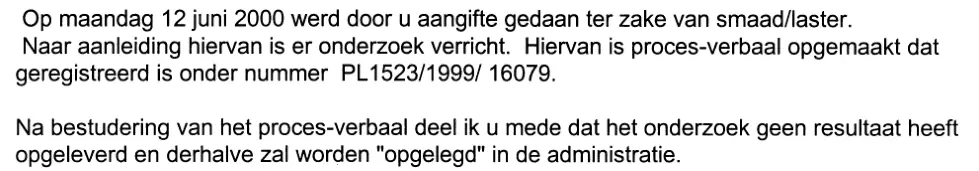

Bewijsstuk · Brief
Politie Haaglanden aan Giltay, afhandeling van de aangifte, 19 september 2000
De passage
“Op maandag 12 juni 2000 werd door u aangifte gedaan ter zake van smaad/laster. Naar aanleiding hiervan is er onderzoek verricht. Hiervan is proces-verbaal opgemaakt dat geregistreerd is onder nummer PL1523/1999/ 16079. Na bestudering van het proces-verbaal deel ik u mede dat het onderzoek geen resultaat heeft opgeleverd en derhalve zal worden “opgelegd” in de administratie.” Pagina 1, de eerste twee alinea’s van de brief. De regels van de scan zijn aaneengeschreven. De aanhalingstekens om ‘opgelegd’ staan in de brief zelf. In de lopende tekst heeft het nummer van het proces-verbaal een spatie na de tweede schuine streep; het briefhoofd schrijft het kenmerk aaneen.

Waarom dit document telt
Met deze brief van 19 september 2000 werd de aangifte van smaad en laster afgedaan die Giltay op 12 juni 2000 had gedaan. De brief staat op briefpapier van de politie Haaglanden en is namens de officier van justitie ondertekend door een hulpofficier van justitie, een inspecteur van politie. Hij deelt mee dat het onderzoek geen resultaat heeft opgeleverd en wordt ‘opgelegd’ in de administratie. Waarom het niets opleverde, staat er niet. De brief noemt evenmin tegen wie de aangifte was gericht; volgens de aangifte zelf was dat Barbara Overduyn, oud-medewerkster van de Militaire Inlichtingendienst.
De politie had in juli 1999 eerst geweigerd de aangifte op te nemen, waarvoor de districtschef in maart 2000 zijn verontschuldiging aanbood. Ruim drie weken na deze brief, op 14 oktober 2000, legde Giltay de zaak voor aan koningin Beatrix. De brief wijst zelf op het beklag bij het gerechtshof volgens artikel 12 van het Wetboek van Strafvordering. Die weg bewandelde Giltay ook: op 7 maart 2001 kwam zijn beklag over het niet vervolgen van Overduyn binnen bij het Gerechtshof Den Haag, dat het op 19 december 2002 afwees.
Herkomst
- Document
- Brief, één pagina, op briefpapier van Politie Haaglanden
- Van
- Politie Haaglanden, korpsonderdeel Den Haag/Haagse Hout-Scheveningen, Nieuwe Parklaan 250, Den Haag
- Aan
- E.W. Giltay, ’s-Gravenhage
- Datum
- 19 september 2000
- Kenmerk
- PL1523/1999/16079
- Onderwerp
- “afhandeling aangifte”
- Verwijzingen
- Giltays aangifte van 12 juni 2000; het proces-verbaal draagt hetzelfde nummer als het kenmerk
- Ondertekend
- Namens de officier van justitie, door de hulpofficier van justitie, inspecteur van politie Haaglanden A. Teiwes; de handtekening is in de pdf zwartgelakt, behalve waar zij over de gedrukte regels loopt
- Uitkomst
- Het onderzoek heeft volgens de brief geen resultaat opgeleverd en wordt ‘opgelegd’ in de administratie; een motivering geeft de brief niet
- Beroep
- De brief wijst op het beklag bij het Gerechtshof Den Haag volgens artikel 12 van het Wetboek van Strafvordering
- Taal
- Nederlands
- Berust bij
- Archief van de auteur
- Zie ook
- Districtschef van politie aan Giltay, 26 maart 2000Aangifte bij de Haagse politie, 12 juni 2000Kabinet der Koningin aan Giltay, 31 oktober 2000Gerechtshof Den Haag, beschikking op het artikel 12-beklag, 19 december 2002
Aangehaald in: het essay ‘Het verbod viel, het boek bleef overeind’ in het hoofdstuk (3) ‘Wat het boek onthult: de Srebrenica-doofpot’.
Bewijsstukpagina: https://
Document: https://
Laatst gewijzigd 9 oktober 2026, geraadpleegd 9 oktober 2026.

Deze pagina is een bewijsstuk bij het boek De doofpotgeneraal van Edwin Giltay en de bijbehorende website.